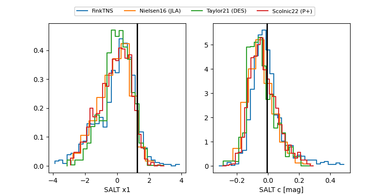

FINK: ZTF25abpzpnf
Lasair: ZTF25abpzpnf
ALeRCE: ZTF25abpzpnf
TNS: 2025xji
YSE: 2025xji
ZTF25abpzpnf (ztf,fink)
2025xji (tns,yse)
PS25hpk (panstarrs)
equatorial (ra, dec) = (320.3539,-2.39751)
galactic (l, b) = (49.7810,-34.07810)

last ztfg=20.25, ztfr=20.07
2 ztfg, 4 ztfr detections